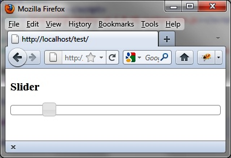

{% include JB/setup %}
{% raw %}
<div>
<div class="calibre13"></div><div class="book" title="Chapter 7. Sliders"><div class="book"><div class="book"><div class="book"><div class="calibre13"></div><h1 class="title1"><a id="sliders" class="calibre1"></a>Chapter 7. Sliders</h1></div></div></div><p class="calibre7">Sliders are widgets that allow users to change the numerical value of
  data by moving a cursor on a graduated axis. For example, a graduated slider
  from 18 to 100 can allow users to select age graphically rather than
  entering it manually in an input field.</p><div class="book" title="Basic Principles of Sliders"><div class="book"><div class="book"><div class="book"><h1 class="title2"><a id="basic_principles_of_sliders" class="calibre1"></a>Basic Principles of Sliders</h1></div></div></div><p class="calibre7">To display a slider like the one shown in <a class="ulink" href="ch07.html#a_slider_in_the_html_page" title="Figure 7-1. A slider in the HTML page">Figure 7-1</a>, we write the following HTML code,
    followed once again by a call to the jQuery UI method, which manages this
    type of graphical component:</p><a id="I_programlisting7_d1e4940" class="firstname"></a><pre class="programlisting">&lt;!DOCTYPE html&gt;
&lt;script src = jquery.js&gt;&lt;/script&gt;
&lt;script src = jqueryui/js/jquery-ui-1.8.16.custom.min.js&gt;&lt;/script&gt;

&lt;link rel=stylesheet type=text/css
      href=jqueryui/css/smoothness/jquery-ui-1.8.16.custom.css /&gt;

&lt;h3&gt;Slider&lt;/h3&gt;
<span class="firstname"><strong class="userinput">&lt;div id=slider&gt;&lt;/div&gt;</strong></span>

&lt;script&gt;

<span class="firstname"><strong class="userinput">$("div#slider").slider ();</strong></span>

&lt;/script&gt;</pre><p class="calibre7">The slider (axis and cursor) is represented by a <code class="literal">&lt;div&gt;</code> element (with slider ID).</p><p class="calibre7">A <code class="literal">&lt;script&gt;</code> tag is added to
    indicate that each <code class="literal">&lt;div&gt;</code>
    corresponding to a slider is managed by the <code class="literal">slider ()</code> method.</p><p class="calibre7">The operation of a slider is simple: you can move the cursor on its
    axis either by dragging it with the mouse (drag-and-drop mechanism) or by
    clicking on a point on the axis. In both cases, the cursor moves to the
    indicated location.</p><div class="book"><div class="figure"><a id="a_slider_in_the_html_page" class="firstname"></a><div class="book"><div class="book"><a id="I_mediaobject7_d1e4969" class="firstname"></a></div></div><p class="title4">Figure 7-1. A slider in the HTML page</p></div></div></div></div></div>

{% endraw %}

